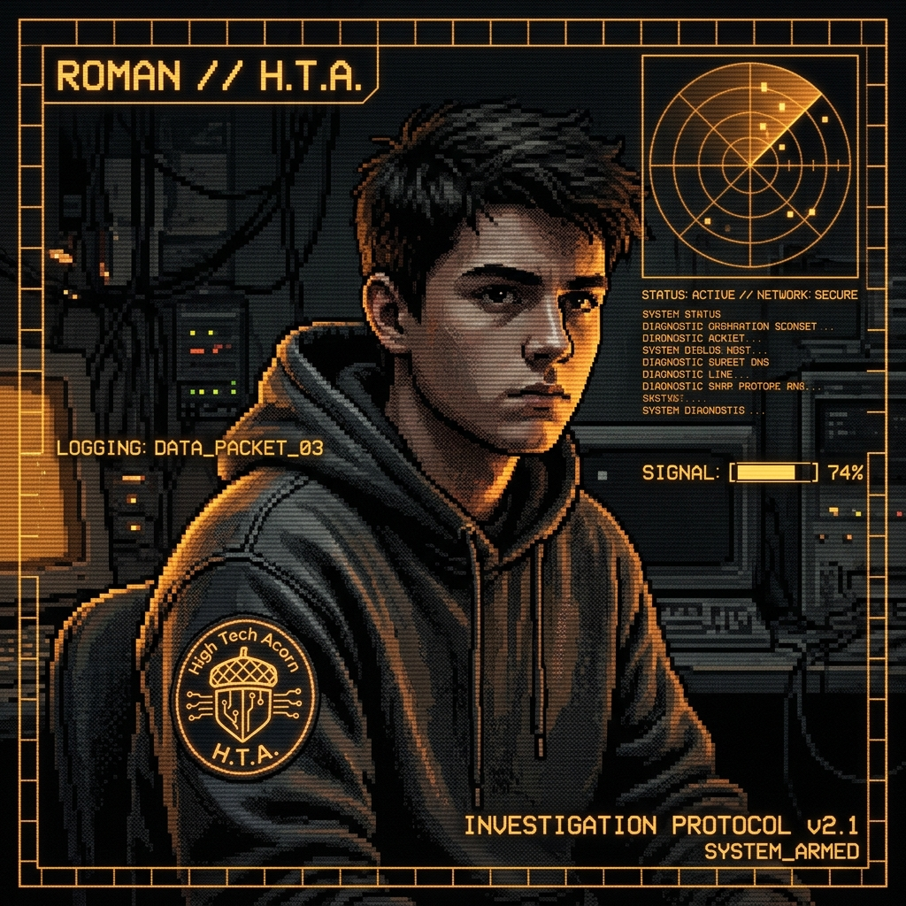
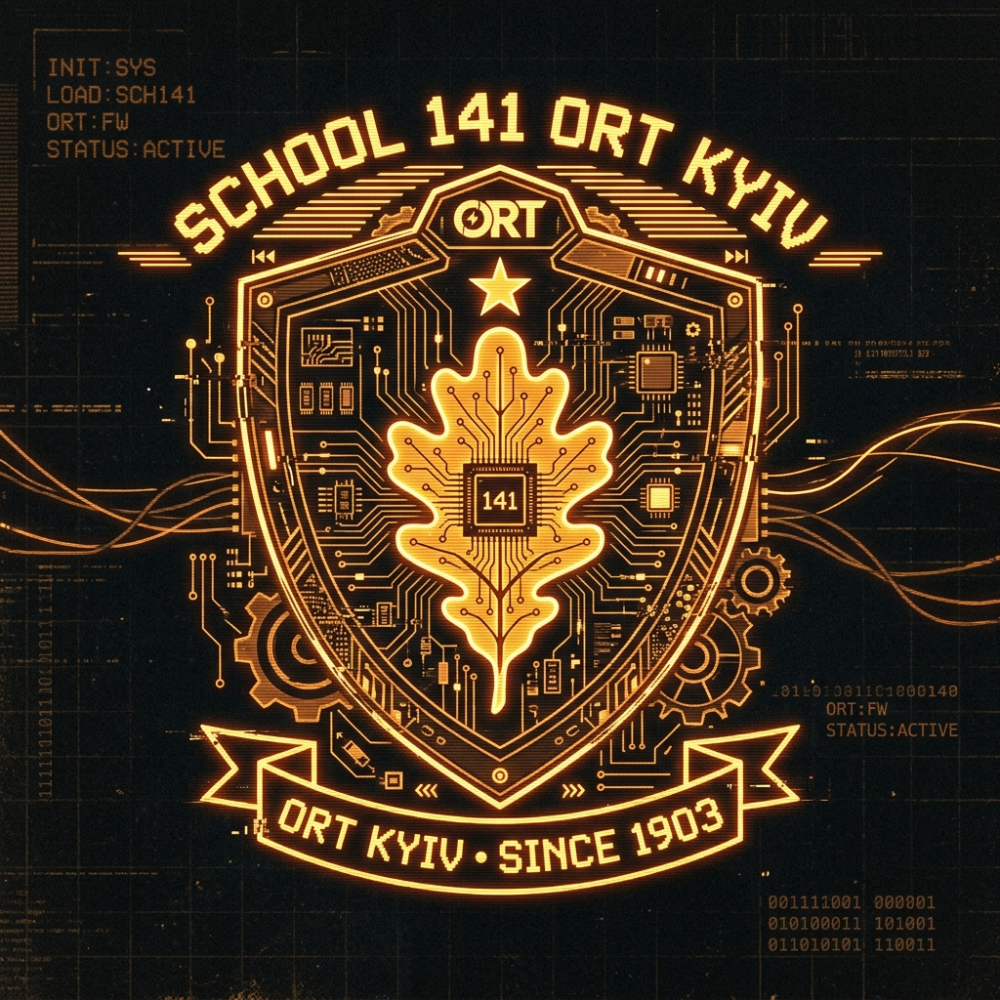
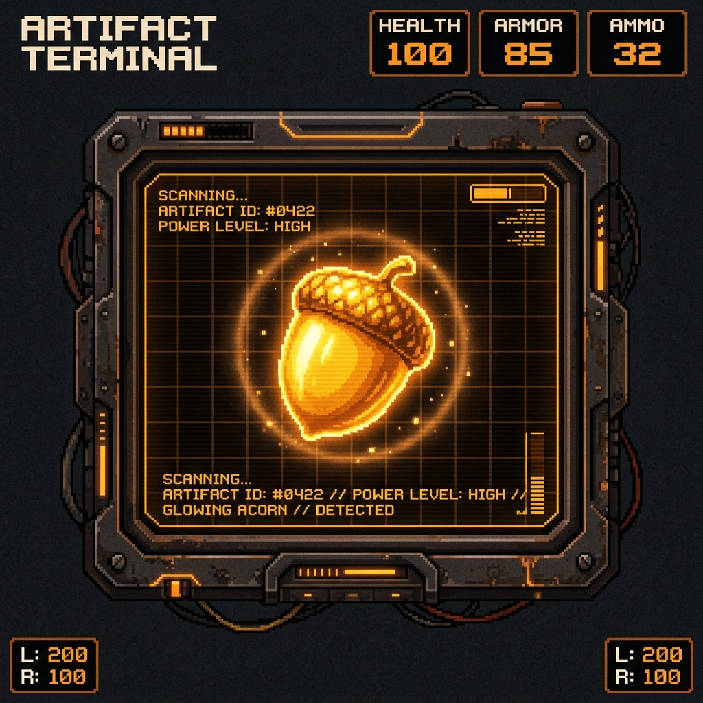

.-----------------------------------------------------------------.
| ____ ___ __ __ _ _ _ // ___ ____ _____ __ _ |
| | _ \ / _ \| \/ | / \ | \ | | // / _ \| _ \_ _|/ |/ | |
| | |_) | | | | |\/| | / _ \ | \| |// | | | | |_) || | | || | |
| | _ <| |_| | | | |/ ___ \| |\ |\\ | |_| | _ < | | | || | |
| |_| \_\\___/|_| |_/_/ \_\_| \_| \\ \___/|_| \_\|_| |__||_| |
'-----------------------------------------------------------------'

- Місто: Київ, Україна
- Навчання: Школа №141 "ОРТ"
- Головне хобі: Збирання жолудів 🌰
- Збірків у базі: 482+ екземплярів
- Спеціалізація: IT & STEM
[2] SYS_INFO // БІОГРАФІЯ ТА ШКОЛА №141 "ОРТ" М. КИЄВА FILE_ID: #141-ORT

Освітній комплекс №141 "ОРТ" м. Києва
Спеціалізація: Інформаційні технології, математика, робототехніка
Привіт! Мене звати Роман. Я навчаюся в 10 класі школи №141 "ОРТ" м. Києва. Моє життя поєднує захоплення сучасними цифровими технологіями (програмування, розробка веб-інтерфейсів) із пристрасним інтересом до природничих наук та екології.
Досліджую дубові гаї Києва (Голосіївський ліс, Ботанічний сад, Феофанія), класифікую види жолудів (Дуб звичайний, Дуб червоний, Дуб кам'яний) та вивчаю умови їх збереження.
У школі №141 "ОРТ" я беру активну участь у STEM-проєктах, IT-олімпіадах та лабораторних дослідженнях, поєднуючи IT-інструменти з біологічним моніторингом міської флори.
TIMELINE // ДОСЯГНЕННЯ ТА ЕТАПИ
-
2026 // ДОСІУчень 10 класу школи №141 "ОРТ" м. КиєваПоглиблене вивчення програмування, веб-розробки та STEM-дисциплін.
-
2025 // ОСІНЬСтворення Бази Даних Жолудів КиєваКаталогізація понад 400 екземплярів жолудів з різних куточків Київської області.
-
2024 // ВЕСНАШкільний STEM-проєкт з ЕкологіїДослідження впливу міського середовища на проростання дубів звичайних.
-
2023 // ВЕРЕСЕНЬПочаток захоплення збиранням жолудівПерша польова експедиція до Голосіївського лісу та знахідка рідкісних екземплярів.
[3] ACORN_DATABASE // ВІРТУАЛЬНИЙ МУЗЕЙ ЖОЛУДІВ CATALOG_V2.1
[4] GAME_HUD // QUAKE ACORN COLLECTOR MINI-GAME CLICKER_ENGINE

⚡ Клікайте по магічному жолудю, збирайте врожай та купуйте термінальні апгрейди!
AVAILABLE UPGRADES // ТЕРМІНАЛЬНІ ПОКРАЩЕННЯ
[5] FIELD_LOG // ЖУРНАЛ ПОЛЬОВИХ ЕКСПЕДИЦІЙ КИЄВА GPS_TRACKS
[6] TRANSMIT_MESSAGE // ЗВОРОРТНИЙ ЗВ'ЯЗОК СИСТЕМИ SECURE_CHANNEL
Бажаєте обговорити навчальний проєкт, поділитися локацією цікавого дуба у Києві чи зв'язатися з Романом? Заповніть форму нижче!